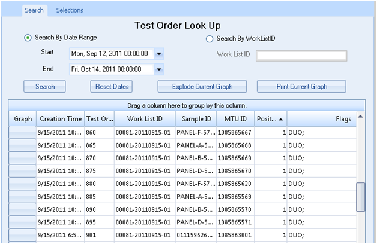
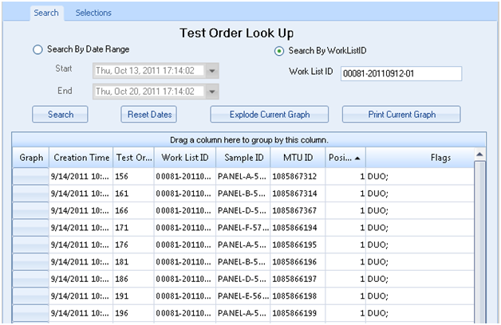
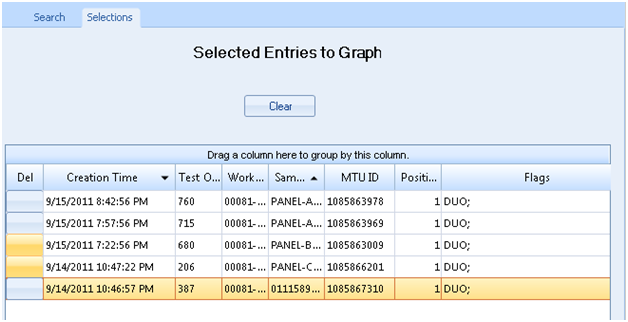
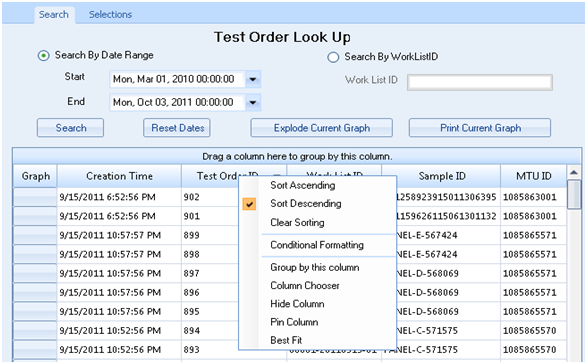
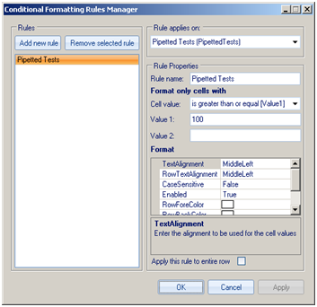
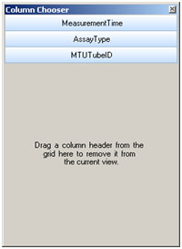
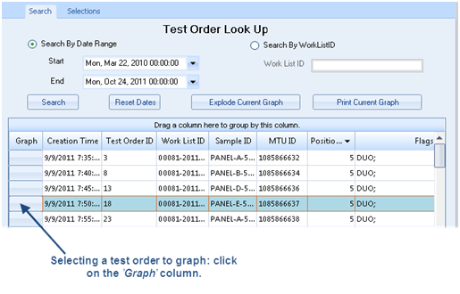
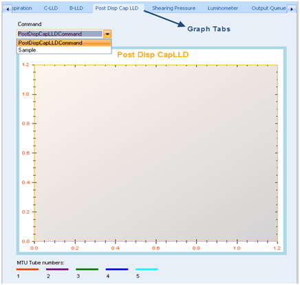

Graphing
The Graphing module provides the ability to view and analyze graphs based upon assay processing tests and command actions. This module can display information for up to 20,000 test orders. The following graphs are available:
| Graph Name | |||||
|---|---|---|---|---|---|
|
Dispense |
C-LLD |
Post Disp Cap LLD |
Luminometer |
Flash |
Pump Monitor |
|
Aspiration |
B-LLD |
Shearing Pressure |
Output Queue |
MagWash |
Fluorescence |
The Graphing module can plot MTU tube process control data from a local date/time range or a Worklist ID.
- Click on the ‘Search by Date Range’ button and select the start and end dates and times.
- Click on the ‘Search’ button to generate the test order list.
The ‘Reset Dates’ button adjusts the ‘Start Date’ and ‘End Date’ to the past seven days, ending with the present date.
The test order columns can be expanded by placing the cursor in between the columns, holding down the left-click button on the mouse, and dragging the bi-directional arrow in the desired direction.
The test order columns can be moved and re-organized by placing the cursor on the column header, holding down the left-click button on the mouse, and dragging it into the desired location.

-
Click on the
 ‘Search By WorklistID’ button and enter the work list identification number in the ‘Work List ID’ text field.
‘Search By WorklistID’ button and enter the work list identification number in the ‘Work List ID’ text field. -
Click on the ‘Search’ button to generate the test order list that is associated to this WorklistID.

The ‘Reset Dates’ button adjusts the ‘Start Date’ and ‘End Date’ to the past seven days, ending with the present date; it also clears the ‘Work List ID’ text field.
The ‘Explode Current Graph’ button enlarges the most recent selected graph.
The ‘Print Current Graph’ button prints the most recent selected graph.
The ‘Selections’ tab displays the test orders that have been selected to generate a graph(s). It is located above the ‘Test Order Look Up’ screen, next to its ‘Search’ tab.
The  ‘Clear’ button removes the list of test orders that were selected on the ‘Test Order Look Up’ in the ‘Search’ tab.
‘Clear’ button removes the list of test orders that were selected on the ‘Test Order Look Up’ in the ‘Search’ tab.

To organize  Test Order Look Up columns, right-click the column head, then select the desired item in the pop-up menu.
Test Order Look Up columns, right-click the column head, then select the desired item in the pop-up menu.
Refer to Test Order Look Up below:

-
Columns can be sorted in ascending or descending order by right-clicking on the column header and selecting ‘Sort Ascending’ or ‘Sort Descending’.
-
Column sorting can be reversed by right-clicking on the column header and selecting ‘Clear Sorting’.
-
Conditional Formatting can be done by right-clicking on the column header and selecting
‘Conditional Formatting’. This feature assists with the creation of rules for customized formatting. The following can be controlled: text alignment, row alignment, case sensitive, row color, and cell color.
-
Columns can be grouped by an existing column by right-clicking on the column header and selecting ‘Group by this column’. Grouping can be used to consolidate non-numeric data values into more general group values; these group values can be mapped into a new column within the data set.
-
Columns can be removed from the current view by right-clicking on the column header and selecting ‘Column Chooser’. Drag a column header into the gray area in the ‘Column Chooser’ dialog box to remove the column.
-
Columns can be hidden from the Event Logs screen by right-clicking on the column header and selecting
‘Hide Column’. To unhide the column, right-click on any column header and select ‘Column Chooser’, then drag the hidden column header back out to the ‘Test Order Look Up’ screen.
- Columns can be ‘pinned’ so that they remain at the ends of the screen (left or right side); this keeps the column headings visible as the data bar is scrolled up and down. To pin the column, right-click on the column header and select ‘Pin Column’; to reverse this, right-click on the same column header and select ‘Unpin Column'.
- Columns 8) Columns do not automatically accommodate to fit the information they contain; however, by right-clicking and selecting ‘Best Fit’, the column automatically expands and contracts to fit the data enclosed.
-
In the ‘Graphing’ module and on the
‘Test Order Look Up’ screen, select at least one test order by clicking on the test order ‘Graph’ column; this highlights the entire test order row. Select as many test orders as needed.
-
On the right side of the ‘Graphing’ screen,
select the desired graph by clicking on the graph’s tab.
- Go to the graph’s ‘Command’ drop-down menu and select the desired parameter. Once the parameter is selected, the graph will automatically plot.
-
In the ‘Graphing’ module and on the ‘Test Order Look Up’ screen, select a sample by clicking on the ‘Graph’ column; this highlights the sample’s order row.
-
On the right side of the ‘Graphing’ screen, select the ‘Aspiration’ tab.
-
To plot a graph, select a ‘Command’ from the drop-down menu.
 button at the top of the page to send feedback, comments, or change requests.
button at the top of the page to send feedback, comments, or change requests.